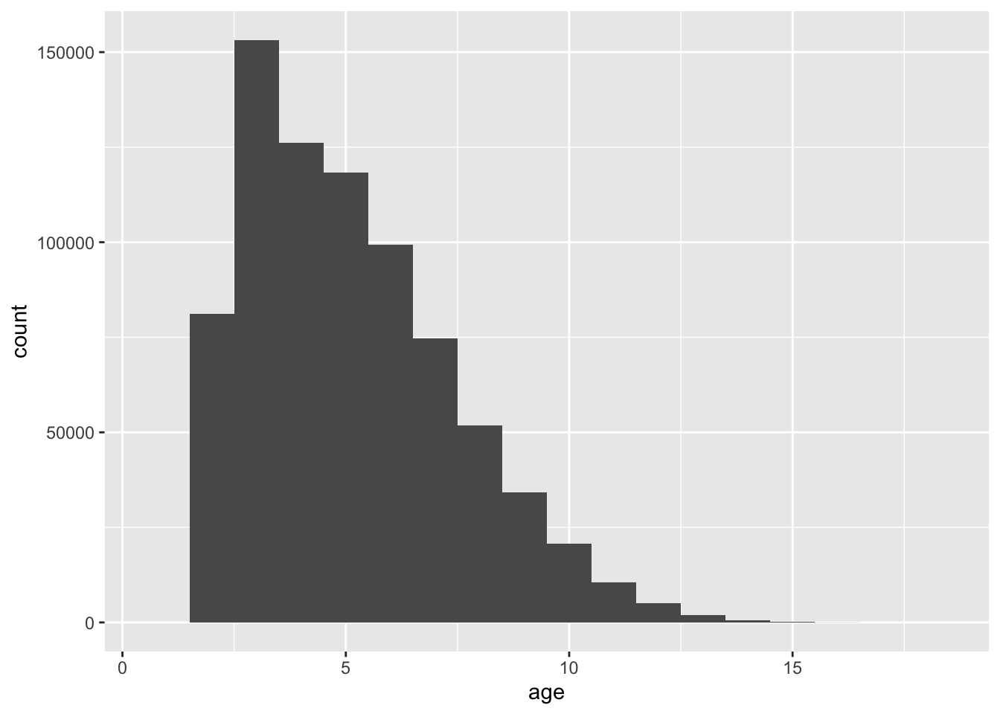

set.seed(params$seed)
library(dplyr)
library(readr)
library(here)
library(lubridate)
library(tibble)
library(ggplot2)
df <- readr::read_csv(params$data_path, show_col_types = FALSE)SmartOdds Junior Quant Test — Horse Racing
1 Set up
2 Q0. Explore the Dataset
# Brief overview
df |>
dplyr::glimpse()Rows: 777,549
Columns: 30
$ date <date> 2015-05-01, 2015-05-01, 2015-05-01, 2015-05-0…
$ racecourse_country <chr> "GB", "GB", "GB", "GB", "GB", "GB", "GB", "GB"…
$ racecourse_name <chr> "Chepstow", "Chepstow", "Chepstow", "Chepstow"…
$ race_time <time> 13:40:00, 13:40:00, 13:40:00, 13:40:00, 13:40…
$ race_id <dbl> 49699, 49699, 49699, 49699, 49699, 49699, 4969…
$ race_distance <dbl> 2435.047, 2435.047, 2435.047, 2435.047, 2435.0…
$ race_type <chr> "Flat", "Flat", "Flat", "Flat", "Flat", "Flat"…
$ race_type_simple <chr> "Flat Turf", "Flat Turf", "Flat Turf", "Flat T…
$ going_clean <chr> "Good", "Good", "Good", "Good", "Good", "Good"…
$ n_runners <dbl> 8, 8, 8, 8, 8, 8, 8, 8, 5, 5, 5, 5, 5, 8, 8, 8…
$ horse_id <dbl> 21374, 21378, 26461, 50069, 102542, 110803, 11…
$ horse_name <chr> "Eton Rambler", "Shades Of Silver", "Marengo",…
$ age <dbl> 5, 5, 4, 5, 4, 7, 7, 5, 2, 2, 2, 2, 2, 8, 7, 4…
$ official_rating <dbl> 73, 69, 69, 70, 74, 74, 63, 67, NA, NA, NA, NA…
$ carried_weight <dbl> 59.87419, 58.05982, 54.88468, 58.51342, 60.327…
$ draw <dbl> 3, 6, 8, 2, 4, 5, 7, 1, 4, 3, 2, 5, 1, 5, 8, 1…
$ jockey_id <dbl> 5362, 7227, 12949, 5425, 5481, 1529, 5285, 624…
$ jockey_name <chr> "Pat Cosgrave", "William Twiston-Davies", "Jor…
$ trainer_id <dbl> 375, 367, 762, 126, 414, 736, 343, 583, 4, 5, …
$ trainer_name <chr> "George Baker", "Michael Scudamore", "Bernard …
$ ltp_5min <dbl> 7.8, 5.8, 12.0, 34.0, 7.6, 44.0, 5.0, 4.4, 22.…
$ obs__bsp <dbl> 9.12, 7.00, 9.28, 18.00, 7.40, 29.50, 4.97, 4.…
$ obs__racing_post_rating <dbl> 82, 81, 45, 62, 77, 55, 67, 80, 65, 66, 78, 59…
$ obs__Place <chr> "3", "2", "8", "6", "5", "7", "4", "1", "3", "…
$ obs__uposition <dbl> 3, 2, 8, 6, 5, 7, 4, 1, 3, 2, 1, 4, 5, 1, 3, 5…
$ obs__is_winner <dbl> 0, 0, 0, 0, 0, 0, 0, 1, 0, 0, 1, 0, 0, 1, 0, 0…
$ obs__top_speed <dbl> 48, 47, 11, 28, 44, 21, 33, 46, 54, 55, 68, 39…
$ obs__distance_to_winner <dbl> 2.50, 0.50, 23.00, 13.00, 6.00, 20.00, 5.50, 0…
$ obs__pos_prize <dbl> 721.50, 1443.75, 0.00, 0.00, 0.00, 0.00, 360.7…
$ obs__completion_time <dbl> 155.95, 155.61, 159.36, 157.70, 156.53, 158.86…The dataset contains information about race characteristics, participating horses, and their performance during the race (the columns that have prefix obs__).
# Checking any missing data
missings <- df |>
dplyr::summarise(across(everything(), ~ mean(is.na(.)))) |>
t() |>
as.data.frame() |>
tibble::rownames_to_column(var = "variable") |>
dplyr::rename("missing_prop" = "V1") |>
dplyr::filter(.data$missing_prop > 0) |>
dplyr::arrange(desc(.data$missing_prop))
missings |>
dplyr::glimpse()Rows: 5
Columns: 2
$ variable <chr> "official_rating", "obs__top_speed", "obs__racing_post_ra…
$ missing_prop <dbl> 0.261869027, 0.210364877, 0.083097014, 0.061400632, 0.001…Several columns have missing information including official rating, top speed during the race, and last traded price 5 minutes before the off.
df |>
dplyr::filter(is.na(.data$obs__completion_time)) |>
dplyr::select("obs__Place") |>
unique()# A tibble: 26 × 1
obs__Place
<chr>
1 UR
2 PU
3 F
4 SU
5 REF
6 RO
7 BD
8 RR
9 CO
10 3
# ℹ 16 more rowsLooking closely at the rows where obs__completion_time is missing, many correspond to non-completions such as UR (unseated rider), PU (pulled up), and BD (brought down). A similar pattern appears for missing values in obs__racing_post_rating. Therefore, these variables are not missing completely at random; their missingness is related to the race outcome.
df |>
dplyr::filter(is.na(.data$ltp_5min)) |>
dplyr::group_by(.data$race_id) |>
dplyr::tally() |>
dplyr::rename("n_missing" = "n") |>
dplyr::left_join(
df |>
dplyr::group_by(.data$race_id) |>
dplyr::tally() |>
dplyr::rename("n_total" = "n"),
by = "race_id"
) |>
dplyr::mutate(
coincide = .data$n_missing == .data$n_total
) |>
dplyr::group_by(.data$coincide) |>
dplyr::count()# A tibble: 1 × 2
# Groups: coincide [1]
coincide n
<lgl> <int>
1 TRUE 139Looking at the missingness of Last Traded Price 5 mins, it is missing for every participant for that entire race. Thus this variable is not missing at random either.
df |>
ggplot2::ggplot(ggplot2::aes(x = age)) +
ggplot2::geom_histogram(binwidth = 1)
df |>
ggplot2::ggplot(ggplot2::aes(x = carried_weight)) +
ggplot2::geom_histogram()
The histogram of horse ages at race time shows a positively skewed distribution. In contrast, the histogram of carried weights is bimodal.
3 Q1. Explore Peak Age
df |>
dplyr::filter(obs__is_winner == 1) |>
dplyr::group_by(race_type_simple) |>
dplyr::summarise(
n_winners = dplyr::n(),
median_age = median(age, na.rm = TRUE),
q1_age = quantile(age, 0.25, na.rm = TRUE),
q3_age = quantile(age, 0.75, na.rm = TRUE),
.groups = "drop"
)# A tibble: 4 × 5
race_type_simple n_winners median_age q1_age q3_age
<chr> <int> <dbl> <dbl> <dbl>
1 Chase 12055 7 6 9
2 Flat AW 18405 4 3 5
3 Flat Turf 32877 3 3 5
4 Hurdle 18471 6 5 7Looking at all winning horses, the median age for Chase was highest at 7 yrs-old (IQR: [6-9]), while for Flat Turf the median age was the lowest at 3 yrs-old (IQR: [3-5]).
However, we can also explore the variable obs__racing_post_rating to evaluate the performance during the race.
mean_race_rating_by_age <- df |>
dplyr::group_by(.data$race_type_simple, .data$age) |>
dplyr::summarise(
mean_rating = mean(.data$obs__racing_post_rating, na.rm = TRUE),
.groups = "drop"
) |>
dplyr::group_by(.data$race_type_simple) |>
dplyr::arrange(desc(.data$mean_rating), .by_group = T) |>
dplyr::ungroup()
mean_race_rating_by_age |>
dplyr::glimpse()Rows: 60
Columns: 3
$ race_type_simple <chr> "Chase", "Chase", "Chase", "Chase", "Chase", "Chase",…
$ age <dbl> 6, 7, 8, 5, 4, 9, 10, 11, 12, 13, 14, 16, 15, 17, 6, …
$ mean_rating <dbl> 109.69795, 108.85888, 107.43485, 106.67940, 105.89453…mean_race_rating_by_age |>
dplyr::group_by(.data$race_type_simple) |>
dplyr::filter(dplyr::row_number()==1)# A tibble: 4 × 3
# Groups: race_type_simple [4]
race_type_simple age mean_rating
<chr> <dbl> <dbl>
1 Chase 6 110.
2 Flat AW 6 62.3
3 Flat Turf 5 72.0
4 Hurdle 6 94.7After removing horses with missing obs__racing_post_rating, I find that, performance-wise, the peak age is 6 for Chase, Flat AW, and Hurdle races, and 5 for Flat Turf.
Next, I will use ltp_5min variable. Compared to obs__racing_post_rating, this is the pre-race expectation of the performanec of the horse. Similar to before, I observed that ths missing of ltp_5min is race-specific.
mean_race_ltp_by_age <- df |>
dplyr::group_by(.data$race_type_simple, .data$age) |>
dplyr::summarise(
mean_ltp = mean(.data$ltp_5min, na.rm = TRUE),
.groups = "drop"
) |>
dplyr::group_by(.data$race_type_simple) |>
dplyr::arrange(.data$mean_ltp, .by_group = T) |>
dplyr::ungroup()
mean_race_ltp_by_age |>
dplyr::glimpse()Rows: 60
Columns: 3
$ race_type_simple <chr> "Chase", "Chase", "Chase", "Chase", "Chase", "Chase",…
$ age <dbl> 17, 16, 8, 7, 9, 10, 11, 6, 12, 4, 14, 13, 5, 15, 15,…
$ mean_ltp <dbl> 23.16667, 24.86154, 30.36239, 30.44321, 32.49950, 35.…mean_race_ltp_by_age |>
dplyr::group_by(.data$race_type_simple) |>
dplyr::filter(dplyr::row_number()==1)# A tibble: 4 × 3
# Groups: race_type_simple [4]
race_type_simple age mean_ltp
<chr> <dbl> <dbl>
1 Chase 17 23.2
2 Flat AW 15 27.4
3 Flat Turf 1 11
4 Hurdle 10 54.9In contrast to the performance-based results, the age groups with the lowest average ltp_5min are the very young and the very old horses. Potential explanation of this could due to sample size. Very young or very old horses appear relatively rarely, and in those few cases they tend to be either precocious types or battle-hardened specialists who attract strong market support. As a result, a handful of heavily backed runners can pull the average odds down for these extreme ages, even though they do not represent the typical horse at that age.
To tackle this issue, I have imposed a constrain of minimum 100 horses per race_type_simple per age and recalculate the mean_ltp
mean_race_ltp_by_age_constrained <- df |>
dplyr::group_by(.data$race_type_simple, .data$age) |>
dplyr::summarise(
mean_ltp = mean(.data$ltp_5min, na.rm = TRUE),
.groups = "drop"
) |>
dplyr::group_by(.data$race_type_simple) |>
dplyr::arrange(.data$mean_ltp, .by_group = T) |>
dplyr::ungroup() |>
dplyr::left_join(
df |>
dplyr::filter(!is.na(age), !is.na(ltp_5min)) |>
dplyr::count(race_type_simple, age, name = "n_runners"),
by = c("race_type_simple", "age")
) |>
dplyr::filter(.data$n_runners > 100)
mean_race_ltp_by_age_constrained |>
dplyr::glimpse()Rows: 46
Columns: 4
$ race_type_simple <chr> "Chase", "Chase", "Chase", "Chase", "Chase", "Chase",…
$ age <dbl> 8, 7, 9, 10, 11, 6, 12, 4, 14, 13, 5, 6, 7, 5, 8, 4, …
$ mean_ltp <dbl> 30.36239, 30.44321, 32.49950, 35.11208, 38.58994, 38.…
$ n_runners <int> 19214, 21648, 14535, 10082, 5690, 15109, 2935, 599, 3…mean_race_ltp_by_age_constrained |>
dplyr::group_by(.data$race_type_simple) |>
dplyr::filter(dplyr::row_number()==1)# A tibble: 4 × 4
# Groups: race_type_simple [4]
race_type_simple age mean_ltp n_runners
<chr> <dbl> <dbl> <int>
1 Chase 8 30.4 19214
2 Flat AW 6 35.2 15311
3 Flat Turf 8 35.6 8531
4 Hurdle 10 54.9 5954In this way, the age with the greatest pre-game expectation aligns more closely with the previous findings.
4 Q2. Ratings for horses, jockeys and trainers.
I used previous race ratings, together with shrinkage to account for small sample sizes.
df <- df |>
dplyr::arrange(date, race_time, race_id)
global_mean_rating <- df |>
dplyr::summarise(
global_mean = mean(.data$obs__racing_post_rating, na.rm = TRUE)
) |>
dplyr::pull("global_mean")
global_mean_rating[1] 74.7805To determine the shrinkage factor, I will first look at how many races each horse/jokecy/trainer do on average and then determine suitable shrinking factors
summarise_runs <- function(data, id_var) {
data |>
dplyr::count({{ id_var }}, name = "n_races") |>
dplyr::summarise(mean_n = mean(n_races), .groups = "drop")
}
horse_mean_n <- summarise_runs(df, horse_id)$mean_n
jockey_mean_n <- summarise_runs(df, jockey_id)$mean_n
trainer_mean_n <- summarise_runs(df, trainer_id)$mean_n
k_horse <- round(horse_mean_n/2)
k_jockey <- round(jockey_mean_n/10)
k_trainer <- round(trainer_mean_n/10)
k_horse[1] 5k_jockey[1] 29k_trainer[1] 32With these factors determined via a data-driven manner, I will then compute the ratings.
df <- df |>
dplyr::group_by(.data$horse_id) |>
dplyr::arrange(.data$date, .data$race_time, .data$race_id, .by_group = TRUE) |>
dplyr::mutate(
rating_valid = .data$obs__racing_post_rating,
cum_sum_rating = cumsum(dplyr::if_else(is.na(.data$rating_valid), 0, .data$rating_valid)),
cum_n_rating = cumsum(!is.na(.data$rating_valid)),
prior_sum_rating = dplyr::lag(.data$cum_sum_rating, default = 0),
prior_n_rating = dplyr::lag(.data$cum_n_rating, default = 0),
horse_mean_prior = dplyr::if_else(
.data$prior_n_rating > 0,
.data$prior_sum_rating / .data$prior_n_rating,
NA_real_
),
horse_weight = .data$prior_n_rating / (.data$prior_n_rating + k_horse),
rating_horse = dplyr::case_when(
.data$prior_n_rating == 0 ~ global_mean_rating,
T ~ .data$horse_weight * .data$horse_mean_prior + (1 - .data$horse_weight) * global_mean_rating)) |>
dplyr::ungroup() |>
dplyr::select(
-dplyr::all_of(c("rating_valid", "cum_sum_rating", "cum_n_rating", "prior_sum_rating", "prior_n_rating", "horse_weight", "horse_mean_prior"))
)
# quick check on the rating_horse
df |>
dplyr::arrange(.data$race_id)|>
dplyr::select("race_id", "horse_id", "rating_horse") |>
head()# A tibble: 6 × 3
race_id horse_id rating_horse
<dbl> <dbl> <dbl>
1 28 450 74.8
2 28 453 74.8
3 28 456 70.0
4 28 461 72.0
5 28 463 74.6
6 28 466 74.8df <- df |>
dplyr::group_by(.data$jockey_id) |>
dplyr::arrange(.data$date, .data$race_time, .data$race_id, .by_group = TRUE) |>
dplyr::mutate(
rating_valid = .data$obs__racing_post_rating,
cum_sum_rating = cumsum(dplyr::if_else(is.na(.data$rating_valid), 0, .data$rating_valid)),
cum_n_rating = cumsum(!is.na(.data$rating_valid)),
prior_sum_rating = dplyr::lag(.data$cum_sum_rating, default = 0),
prior_n_rating = dplyr::lag(.data$cum_n_rating, default = 0),
jockey_mean_prior = dplyr::if_else(
.data$prior_n_rating > 0,
.data$prior_sum_rating/.data$prior_n_rating,
NA_real_
),
jockey_weight = .data$prior_n_rating/(.data$prior_n_rating + k_jockey),
rating_jockey = dplyr::case_when(
.data$prior_n_rating == 0 ~ global_mean_rating,
T ~ .data$jockey_weight * .data$jockey_mean_prior + (1 - .data$jockey_weight) * global_mean_rating)) |>
dplyr::ungroup() |>
dplyr::select(-dplyr::all_of(c("rating_valid", "cum_sum_rating", "cum_n_rating","prior_sum_rating", "prior_n_rating", "jockey_weight", "jockey_mean_prior")))
df |>
dplyr::arrange(.data$race_id)|>
dplyr::select("race_id", "horse_id", "rating_horse", "rating_jockey") |>
head()# A tibble: 6 × 4
race_id horse_id rating_horse rating_jockey
<dbl> <dbl> <dbl> <dbl>
1 28 450 74.8 73.7
2 28 461 72.0 59.9
3 28 466 74.8 67.8
4 28 453 74.8 71.0
5 28 463 74.6 67.6
6 28 471 68.0 72.6df <- df |>
dplyr::group_by(.data$trainer_id) |>
dplyr::arrange(.data$date, .data$race_time, .data$race_id, .by_group = TRUE) |>
dplyr::mutate(
rating_valid = .data$obs__racing_post_rating,
cum_sum_rating = cumsum(dplyr::if_else(is.na(.data$rating_valid), 0, .data$rating_valid)),
cum_n_rating = cumsum(!is.na(.data$rating_valid)),
prior_sum_rating = dplyr::lag(.data$cum_sum_rating, default = 0),
prior_n_rating = dplyr::lag(.data$cum_n_rating, default = 0),
trainer_mean_prior = dplyr::if_else(
.data$prior_n_rating > 0,
.data$prior_sum_rating/.data$prior_n_rating,
NA_real_
),
trainer_weight = .data$prior_n_rating/(.data$prior_n_rating + k_trainer),
rating_trainer = dplyr::case_when(
.data$prior_n_rating == 0 ~ global_mean_rating,
T ~ .data$trainer_weight * .data$trainer_mean_prior + (1 - .data$trainer_weight) * global_mean_rating)) |>
dplyr::ungroup() |>
dplyr::select(-dplyr::all_of(c("rating_valid", "cum_sum_rating", "cum_n_rating", "prior_sum_rating", "prior_n_rating", "trainer_weight", "trainer_mean_prior")))
df |>
dplyr::arrange(.data$race_id)|>
dplyr::select("race_id", "horse_id", "rating_horse", "rating_jockey", "rating_trainer") |>
head()# A tibble: 6 × 5
race_id horse_id rating_horse rating_jockey rating_trainer
<dbl> <dbl> <dbl> <dbl> <dbl>
1 28 450 74.8 73.7 70.8
2 28 461 72.0 59.9 66.5
3 28 471 68.0 72.6 73.6
4 28 468 70.2 69.6 68.8
5 28 453 74.8 71.0 69.0
6 28 456 70.0 72.6 71.45 Q3. Build a predictive model
In this section I model the probability that a runner wins using a standard logistic regression applied at the runner level. This treats each horse–race observation as an independent Bernoulli outcome with predictors given by the historical ratings constructed in Q2 (for horse, jockey and trainer), plus other covariates such as age, carried weight and race type. I chose this approach because it is simple, transparent and easy to interpret: the sign and size of each coefficient directly shows how that feature affects the log-odds of winning, and the model outputs a calibrated probability that can be used later for betting-strategy evaluation.
# Split data to train (70% to 30%)
race_order <- df |>
dplyr::distinct(.data$race_id, .data$date, .data$race_time) |>
dplyr::arrange(date, race_time, race_id) |>
dplyr::mutate(race_index = dplyr::row_number())
n_races <- nrow(race_order)
train_cutoff <- floor(0.7 * n_races)
train_races <- race_order |>
dplyr::filter(.data$race_index <= train_cutoff) |>
dplyr::pull("race_id")
df <- df |>
dplyr::mutate(
set = dplyr::if_else(.data$race_id %in% train_races, "train", "test")
)
df |>
dplyr::group_by(.data$set) |>
dplyr::tally()# A tibble: 2 × 2
set n
<chr> <int>
1 test 238122
2 train 539427After splitting the data, the next step will be fitting a logistic regression on the training data. The covariates I have included are ratings from Q2, age, carried_weight, race_distance, race_type_simple, going_clean, n_runners, draw, and racecourse_country.
train_df <- df |>
dplyr::filter(
.data$set == "train",
!is.na(.data$obs__is_winner),
!is.na(.data$rating_horse),
!is.na(.data$rating_jockey),
!is.na(.data$rating_trainer)
)
win_model <- glm(
obs__is_winner ~ rating_horse + rating_jockey + rating_trainer + age + carried_weight + race_distance + race_type_simple + going_clean + n_runners + draw +
racecourse_country,
data = train_df,
family = binomial(link = "logit")
)Using this model, I have further normalised the win probability so that per race the win probability adds up to 1.
test_df <- df |>
dplyr::filter(
.data$set == "test",
!is.na(.data$obs__is_winner),
!is.na(.data$rating_horse),
!is.na(.data$rating_jockey),
!is.na(.data$rating_trainer)
) %>%
dplyr::mutate(
p_hat = predict(win_model, newdata = ., type = "response")
) |>
dplyr::group_by(race_id) |>
dplyr::mutate(
winning_prob = p_hat / sum(p_hat, na.rm = TRUE)
) |>
dplyr::ungroup()
test_df |>
dplyr::arrange(.data$race_id) |>
dplyr::select("race_id", "horse_id", "winning_prob") |>
dplyr::glimpse()Rows: 238,122
Columns: 3
$ race_id <dbl> 140, 140, 140, 140, 140, 140, 140, 142, 142, 142, 142, 14…
$ horse_id <dbl> 1928, 1939, 1936, 1934, 1925, 1922, 1931, 1959, 1957, 195…
$ winning_prob <dbl> 0.13147397, 0.14158845, 0.14078607, 0.11068003, 0.1613387…Naturally, one can test the performance using Brier Score
brier_score <- mean((test_df$p_hat - test_df$obs__is_winner)^2)
brier_score[1] 0.08979547# Naive Baseline, everyone has equal chance of winning
baseline_brier <- test_df |>
dplyr::mutate(
p_baseline = 1 / n_runners
) |>
dplyr::summarise(
brier = mean((p_baseline - obs__is_winner)^2)
) |>
dplyr::pull(brier)
baseline_brier[1] 0.09060817We can see that the Brier score for a simple logistic regression was better than naive approach, though not by much. To improve the score, I will next explore fitting regression with non-linear terms. To do this, I will use spline terms.
library(splines)
win_model_ns <- glm(
obs__is_winner ~
rating_horse + rating_jockey + rating_trainer +
age +
ns(carried_weight, df = 3) +
ns(race_distance, df = 3) +
ns(draw, df = 3) +
race_type_simple + going_clean +
n_runners + racecourse_country,
data = train_df,
family = binomial(link = "logit")
)
test_df_ns <- df |>
dplyr::filter(
.data$set == "test",
!is.na(.data$obs__is_winner),
!is.na(.data$rating_horse),
!is.na(.data$rating_jockey),
!is.na(.data$rating_trainer)
) %>%
dplyr::mutate(
p_hat = predict(win_model_ns, newdata = ., type = "response")
) |>
dplyr::group_by(race_id) |>
dplyr::mutate(
winning_prob = p_hat / sum(p_hat, na.rm = TRUE)
) |>
dplyr::ungroup()
brier_score_ns <- mean((test_df_ns$p_hat - test_df_ns$obs__is_winner)^2)
brier_score_ns[1] 0.08964895Compared to a naive baseline that assigns each runner probability 1 / n_runners (Brier 0.0906), the ratings-based logistic regression reduces the Brier score to 0.0898, and a slightly more flexible specification with non-linear effects for distance, draw and carried weight further improves it to 0.0896. These are modest but consistent gains, indicating that the engineered ratings and covariates contain genuine predictive information, while also suggesting that the problem is relatively hard and the market reasonably efficient.
In the pursuit of further improvement, I will include Elastic Net into my approach.
library(glmnet)
# Helper: fit elastic net for one alpha, return model and Brier on test ----
fit_elastic_net <- function(alpha_val, x_train, y_train, x_test, y_test,
nfolds = 5, seed = params$seed) {
set.seed(seed)
cv_fit <- cv.glmnet(
x_train, y_train,
family = "binomial",
alpha = alpha_val,
nfolds = nfolds
)
# Predict probs on test set using lambda.min
p_hat <- as.numeric(
predict(cv_fit, newx = x_test, s = "lambda.min", type = "response")
)
brier <- mean((p_hat - y_test)^2)
list(
alpha = alpha_val,
cv_fit = cv_fit,
p_hat = p_hat,
brier = brier
)
}alpha_grid <- c(0, 0.25, 0.5, 0.75, 1)
glmnet_formula <- obs__is_winner ~
rating_horse + rating_jockey + rating_trainer +
age + carried_weight +
race_distance + race_type_simple + going_clean +
n_runners + draw + racecourse_country
x_train <- model.matrix(glmnet_formula, data = train_df)[, -1] # drop intercept
y_train <- train_df$obs__is_winner
x_test <- model.matrix(glmnet_formula, data = test_df)[, -1]
y_test <- test_df$obs__is_winner
elastic_results <- lapply(
alpha_grid,
fit_elastic_net,
x_train = x_train,
y_train = y_train,
x_test = x_test,
y_test = y_test
)
# Extract Brier scores into a neat data frame
elastic_summary <- do.call(
rbind,
lapply(elastic_results, function(res) {
data.frame(
alpha = res$alpha,
brier = res$brier
)
})
)
elastic_summary alpha brier
1 0.00 0.08979779
2 0.25 0.08979034
3 0.50 0.08979032
4 0.75 0.08979033
5 1.00 0.08979043I also tried penalised logistic regression (ridge, lasso and elastic net via glmnet) on the same set of features, tuning \(\lambda\) by cross-validation for several values of \(\alpha\) between 0 and 1. All of these models gave Brier scores of about 0.08979 on the test set, which is almost the same as the basic logistic regression (0.08980) and worse than the spline model (0.08965). So, for this feature set, regularisation does not really help, while adding simple non-linear terms for distance, draw and carried weight does (i.e., win_model_ns).
6 Q4 Compare to the betting market
In this section I use the out-of-sample probabilities from the final model (the spline logistic regression from Q3) to define a simple value-betting strategy. For each runner in the test set, I compare the model’s estimated win probability with the market’s implied probability from the Betfair Starting Price (obs__bsp). The implied market probability is approximated by 1 / obs__bsp.
test_df_bets <- test_df_ns |>
dplyr::filter(!is.na(obs__bsp)) |>
dplyr::mutate(
p_model = dplyr::if_else(
!is.na(.data$winning_prob),
.data$winning_prob,
.data$p_hat
),
p_market = 1 / .data$obs__bsp,
edge = p_model - p_market
)
test_df_bets |>
dplyr::arrange(.data$race_id) |>
dplyr::select("race_id", "horse_id", "p_model", "p_market", "edge", "obs__Place") |>
head()# A tibble: 6 × 6
race_id horse_id p_model p_market edge obs__Place
<dbl> <dbl> <dbl> <dbl> <dbl> <chr>
1 140 1928 0.0725 0.0347 0.0379 3
2 140 1939 0.108 0.00203 0.106 7
3 140 1936 0.151 0.00309 0.148 6
4 140 1934 0.109 0.0312 0.0776 5
5 140 1925 0.186 0.433 -0.247 2
6 140 1922 0.178 0.0894 0.0882 1 # Compare with BSP
brier_naive <- mean(( (1 / test_df_bets$n_runners) - test_df_bets$obs__is_winner)^2)
brier_overall <- test_df_bets |>
dplyr::summarise(
n_runners = dplyr::n(),
brier_model = mean((p_model - obs__is_winner)^2),
brier_bsp = mean((p_market - obs__is_winner)^2)
)
brier_overall# A tibble: 1 × 3
n_runners brier_model brier_bsp
<int> <dbl> <dbl>
1 238122 0.0890 0.0797brier_naive[1] 0.09060817brier_diff <- test_df_bets |>
dplyr::mutate(
diff = (p_market - obs__is_winner)^2 - (p_model - obs__is_winner)^2
)
mean_diff <- mean(brier_diff$diff) # average Brier_BSP - Brier_model
sd_diff <- sd(brier_diff$diff)
n_obs <- nrow(brier_diff)
se_diff <- sd_diff / sqrt(n_obs)
ci_low <- mean_diff - 1.96 * se_diff
ci_high <- mean_diff + 1.96 * se_diff
c(mean_diff = mean_diff, ci_low = ci_low, ci_high = ci_high) mean_diff ci_low ci_high
-0.009259346 -0.009591449 -0.008927243 Overall, the BSP-based model performed better at 5% significance level.
summarise_brier_by <- function(data, group_var) {
data |>
group_by(.data[[group_var]]) |>
summarise(
n_runners = n(),
brier_model = mean((p_model - obs__is_winner)^2),
brier_bsp = mean((p_market - obs__is_winner)^2),
.groups = "drop"
) |>
filter(brier_model < brier_bsp) |>
# add metadata columns and standardise layout
mutate(
subset_var = group_var,
subset_value = as.character(.data[[group_var]])
) |>
select(subset_var, subset_value, n_runners, brier_model, brier_bsp)
}
subset_vars <- c(
"racecourse_country",
"racecourse_name",
"race_time",
"race_id",
"race_distance",
"race_type",
"race_type_simple"
)
brier_by_list <- lapply(
subset_vars,
summarise_brier_by,
data = test_df_bets
)
brier_by_subset <- dplyr::bind_rows(brier_by_list)
brier_by_subset# A tibble: 9,962 × 5
subset_var subset_value n_runners brier_model brier_bsp
<chr> <chr> <int> <dbl> <dbl>
1 racecourse_name Laytown 53 0.101 0.106
2 race_time 11:15:00 8 0.108 0.149
3 race_time 11:40:00 145 0.0806 0.0821
4 race_time 12:06:00 7 0.116 0.146
5 race_time 12:16:00 15 0.0605 0.0687
6 race_time 12:18:00 38 0.0726 0.0754
7 race_time 12:28:00 10 0.0891 0.108
8 race_time 12:48:00 66 0.110 0.118
9 race_time 12:49:00 6 0.145 0.181
10 race_time 12:53:00 40 0.0920 0.0976
# ℹ 9,952 more rowsHowever, the brier_by_subset results show that there are many subsets of races where my model outperforms BSP when measured by Brier score.
Next, here is a strategy using params$edge_threshold.
bet_df <- test_df_bets |>
dplyr::mutate(
edge = p_model - p_market,
bet = edge > params$edge_threshold,
ret = dplyr::case_when(
bet & obs__is_winner == 1 ~ (obs__bsp - 1),
bet & obs__is_winner == 0 ~ -1,
T ~ 0
)
) |>
dplyr::filter(bet)n_bets <- nrow(bet_df)
total_ret <- sum(bet_df$ret)
roi <- total_ret / n_bets
sd_ret <- sd(bet_df$ret)
se_ret <- sd_ret / sqrt(n_bets)
ci_low <- roi - 1.96 * se_ret
ci_high <- roi + 1.96 * se_ret
c(n_bets = n_bets, roi = roi, ci_low = ci_low, ci_high = ci_high) n_bets roi ci_low ci_high
7.255100e+04 -5.417669e-02 -1.216183e-01 1.326491e-02 Unfortunately, this strategy based on my model’s probabilities is not profit-making at the 5% level, and BSP also achieves a lower Brier score overall. This suggests that, with the current features and modelling choices, I do not have a profitable edge over the market. This is consistent with the idea that Betfair SP is an efficient benchmark. To have any realistic chance of a winning strategy, I would need richer ratings (e.g. time-decayed, distance/going-specific), more flexible models (e.g, ensembles or a combination of both classic statsitical modeling and ML tools), and/or additional information.